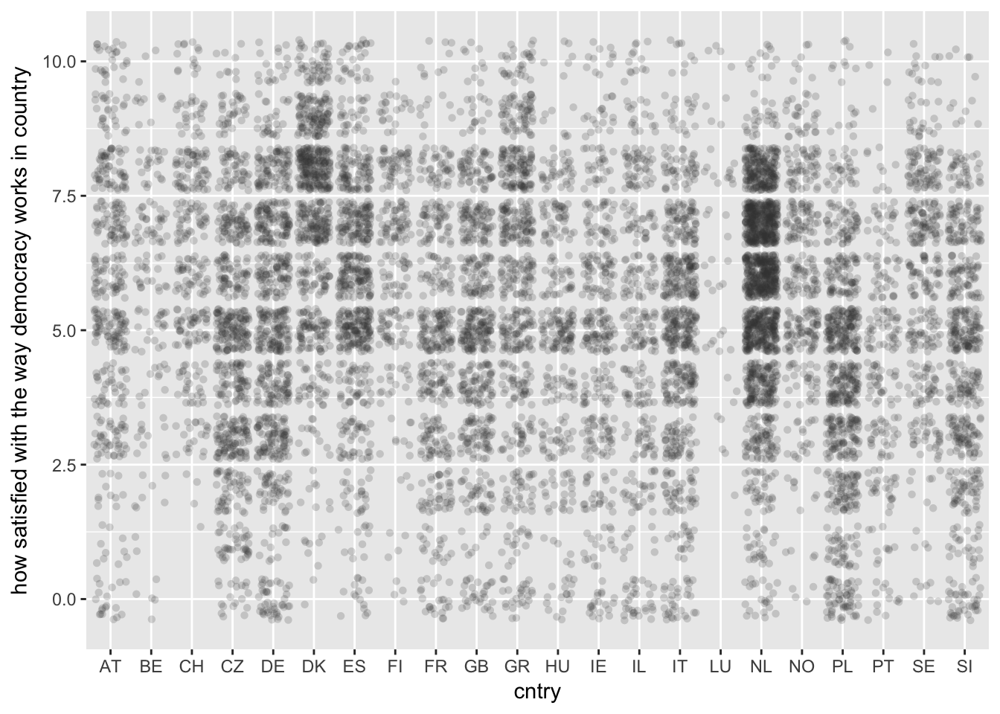

use "../data/ess50.dta", clear
xtmixed stfdem || cntry: // ML is default in Stata
estat icc
. use "../data/ess50.dta", clear
.
. xtmixed stfdem || cntry: // ML is default in Stata
Performing EM optimization:
Performing gradient-based optimization:
Iteration 0: log likelihood = -24517.125
Iteration 1: log likelihood = -24517.125
Computing standard errors:
Mixed-effects ML regression Number of obs = 11,026
Group variable: cntry Number of groups = 22
Obs per group:
min = 46
avg = 501.2
max = 1,547
Wald chi2(0) = .
Log likelihood = -24517.125 Prob > chi2 = .
------------------------------------------------------------------------------
stfdem | Coef. Std. Err. z P>|z| [95% Conf. Interval]
-------------+----------------------------------------------------------------
_cons | 5.455405 .1666017 32.75 0.000 5.128871 5.781938
------------------------------------------------------------------------------
------------------------------------------------------------------------------
Random-effects Parameters | Estimate Std. Err. [95% Conf. Interval]
-----------------------------+------------------------------------------------
cntry: Identity |
sd(_cons) | .771068 .1197082 .5687793 1.045302
-----------------------------+------------------------------------------------
sd(Residual) | 2.227136 .0150127 2.197906 2.256756
------------------------------------------------------------------------------
LR test vs. linear model: chibar2(01) = 1157.51 Prob >= chibar2 = 0.0000
. estat icc
Intraclass correlation
------------------------------------------------------------------------------
Level | ICC Std. Err. [95% Conf. Interval]
-----------------------------+------------------------------------------------
cntry | .1070351 .0297069 .0611934 .1806113
------------------------------------------------------------------------------est store)multi1 <- lmer(stfdem ~ (1|cntry), data = ess, REML = FALSE) # REML is default in R1 is R’s way of refering to an intercept
tidy(multi1)glance(multi1)augment(multi1) %>% head()icc(multi1) ##
## Linear mixed model
## Family: gaussian (identity)
## Formula: stfdem ~ (1 | cntry)
##
## ICC (cntry): 0.107035, remluse "../data/ess50.dta", clear
xtmixed stfdem || cntry:, reml
estat icc
. use "../data/ess50.dta", clear
. xtmixed stfdem || cntry:, reml
Performing EM optimization:
Performing gradient-based optimization:
Iteration 0: log restricted-likelihood = -24517.987
Iteration 1: log restricted-likelihood = -24517.987
Computing standard errors:
Mixed-effects REML regression Number of obs = 11,026
Group variable: cntry Number of groups = 22
Obs per group:
min = 46
avg = 501.2
max = 1,547
Wald chi2(0) = .
Log restricted-likelihood = -24517.987 Prob > chi2 = .
------------------------------------------------------------------------------
stfdem | Coef. Std. Err. z P>|z| [95% Conf. Interval]
-------------+----------------------------------------------------------------
_cons | 5.455717 .1705508 31.99 0.000 5.121443 5.78999
------------------------------------------------------------------------------
------------------------------------------------------------------------------
Random-effects Parameters | Estimate Std. Err. [95% Conf. Interval]
-----------------------------+------------------------------------------------
cntry: Identity |
sd(_cons) | .7898175 .1253521 .5786719 1.078006
-----------------------------+------------------------------------------------
sd(Residual) | 2.227136 .0150127 2.197905 2.256755
------------------------------------------------------------------------------
LR test vs. linear model: chibar2(01) = 1161.54 Prob >= chibar2 = 0.0000
. estat icc
Intraclass correlation
------------------------------------------------------------------------------
Level | ICC Std. Err. [95% Conf. Interval]
-----------------------------+------------------------------------------------
cntry | .1117152 .0315294 .0632058 .1899076
------------------------------------------------------------------------------REML = FALSE)reml <- lmer(stfdem ~ (1|cntry), data = ess)
ml <- lmer(stfdem ~ (1|cntry), data = ess, REML = FALSE)
icc(reml)##
## Linear mixed model
## Family: gaussian (identity)
## Formula: stfdem ~ (1 | cntry)
##
## ICC (cntry): 0.111715icc(ml) ##
## Linear mixed model
## Family: gaussian (identity)
## Formula: stfdem ~ (1 | cntry)
##
## ICC (cntry): 0.107035sjp.lmer(multi1, type = "fe.slope", vars = c("country"))